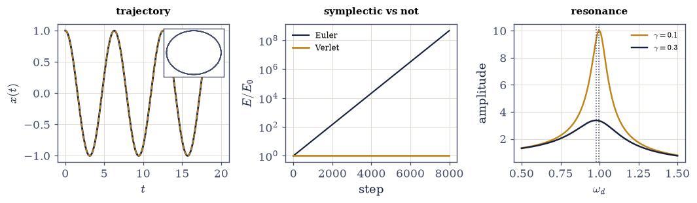
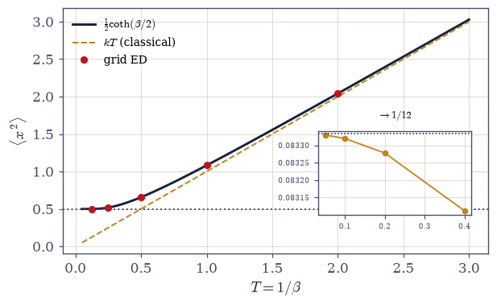
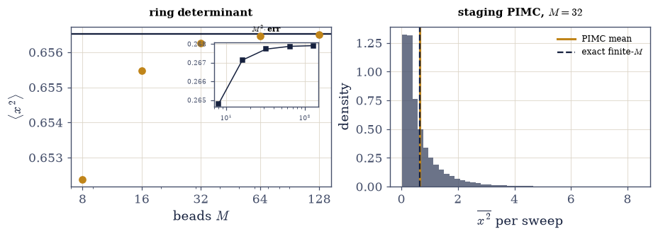
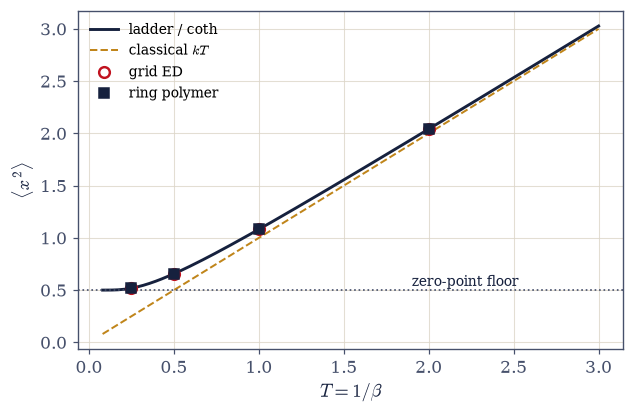

E.1 The Oscillator’s Biography: One System, Seven Volumes#
Notebook overview#
The Epilogue does not open a new subject; it closes the course by computing the threads that run through all seven volumes and belong to none of them alone. This first notebook answers what did the course teach? at the level of a single object. The harmonic oscillator is the course’s recurring protagonist — it appears as a trajectory in Volume I, a resonance in Volume I, a thermal degree of freedom in Volume V, a ladder of states in Volume VI, a thermal density matrix, a ring of beads, and a Monte Carlo walk in Volume VII — and by the end the reader owns not seven facts but one object seen seven ways, with the maps between the views computed rather than asserted.
The organizing discipline is that each face is derived from the more general face as a measured limit, its convergence rate quantified. The classical statistical oscillator is the \(\hbar \to 0\) limit of the thermal quantum one, and the leading correction — the Wigner–Kirkwood term \(\beta/12\) — is verified to five digits, so equipartition itself joins the course’s running tally of classical laws that turned out to be limits (\(h\), \(\sigma\), \(N!\), the Langevin paramagnet, Dulong–Petit, and now equipartition). The quantum ground state is the \(T \to 0\) limit, and zero-point motion is what survives when all thermal occupation is gone. The path-integral and sampled oscillators are the same thermal object reached by imaginary time instead of spectra, converging as \(M \to \infty\) at the measured \(1/M^2\) rate.
The notebook opens with a ring: it returns to the course’s very first computation — the demonstration in §0.1 that a computer cannot represent \((1 + \varepsilon) - 1\) for \(\varepsilon\) below machine epsilon — and reads it forward. The whole course was the craft of computing approximately on purpose and knowing the error, and the oscillator is where that craft is displayed whole, because for the oscillator every answer is known in closed form, so every approximation can be measured against truth. The summit is a four-way rendezvous: the mean-square displacement of a warmed oscillator at \(\beta = 2\), computed by ladder spectra, by grid diagonalization, by a ring-polymer determinant, and by the classical limit — the three quantum routes agreeing to a part in \(10^5\), one number reached by mechanics, spectra, and path integrals at once.
Conventions (this notebook). Oscillator units \(\hbar = m = \omega = 1\) throughout, so energies are in units of \(\hbar\omega\) and the classical temperature enters as \(kT = 1/\beta\); the single knob for the classical-versus-quantum comparison is the temperature (we fix \(\hbar\omega\) and vary \(T\), never both, so the tally of demotions stays clean). The classical trajectory uses
scipy.integrate.solve_ivp(DOP853,rtol = 1e-11); the driven–damped peak is located bynumpy.argmaxon a fine grid and checked against the closed form \(\sqrt{\omega_0^2 - \gamma^2/2}\); equipartition is ascipy.integrate.quadof the Boltzmann weight; the quantum faces use a three-point Laplacian andnumpy.linalg.eighon a box wide enough for the thermal width (adequacy checked); the ring-polymer face reuses the circulant action matrix of §7.20 withnumpy.linalg.slogdet/inv; the sampled face reuses the staging protocol of §7.21 verbatim (\(L = M/2\), seedednumpy.random.default_rng, window-checked \(\tau_{\mathrm{int}}\), blocking). The Wigner–Kirkwood law is fit at small \(\beta\), where it holds.How to read the checks. Each exercise closes with a
validatecall against an independent fact: the ODE against the closed form; the resonance peak against its formula; the ladder against \((n+\tfrac12)\); the coth against grid-ED thermal averages; the \(\beta/12\) law against \(1/12\); the ring determinant against the \(1/M^2\) rate; the four routes against one another. A ✓ is strong evidence; a ✗ is a prompt to locate the discrepancy.Scope. This is synthesis, not expansion: every tool used here was built earlier in the course. See Feynman & Hibbs, Quantum Mechanics and Path Integrals (the path-integral oscillator); Wigner, Phys. Rev. 40, 749 (1932) and Kirkwood, Phys. Rev. 44, 31 (1933) (the \(\hbar^2\) correction). Cross-reference the biography’s chapters: §0.1 (the ring), §1.2 (resonance), §1.6 and §2.3 (symplectic flow), §5.8 (equipartition), §6.12 (the ladder), §7.5 (the coth), §7.20 (the ring polymer), §7.21 (the sampler), and the tally of demotions in §7.8, §7.14, §7.16, §7.18. Forward to E.2 (the action), E.3 (universality), E.4 (the method, and the ring’s far end).
Theory in brief#
The ring: where the course began#
The course’s very first computation, in §0.1, was to show that the computer does not hold the real numbers — only a grid of floating-point values with gaps that thin toward zero — so that below a certain size an addend simply vanishes:
because \(1 + 2^{-53}\) rounds to exactly \(1\) (round-half-to-even). Read forward, this is the whole course in one line: arithmetic itself is approximate, and everything since was the craft of computing approximately with the error kept under control. The oscillator is the place that craft is displayed whole, because every oscillator answer is closed-form, so every numerical face can be graded against the truth — the one system where the course can measure itself.
Seven faces#
The oscillator wore a different face in nearly every volume, each with a defining result the reader has already met:
Faces 1–2 are the mechanics of Volume I (the closed forms are in any text; Goldstein derives the driven oscillator’s response in full). Face 3 is the equipartition of §5.8; Face 4 the ladder of §6.12; Face 5 the coth of §7.5; Faces 6–7 the imaginary-time machinery of §7.20 and §7.21.
The spine: reductions as measured limits#
The biography’s real content is that these are not seven oscillators but one, and the views connect by limits the notebook does not assert but measures. Expanding the coth at small argument, \(\coth(x) = 1/x + x/3 - \cdots\), gives the classical value plus a leading quantum correction:
so the classical statistical oscillator (Face 3) is the \(\hbar \to 0\) (equivalently \(T \to \infty\)) limit of the thermal quantum one (Face 5), corrected by the Wigner–Kirkwood \(\beta/12\) term (Wigner 1932, Kirkwood 1933) — equipartition demoted to a limit, on a measured law. The quantum ground state (Face 4) is the \(T \to 0\) limit: zero- point motion is what survives when all thermal occupation is gone. And the ring-polymer and sampled faces (6, 7) are the same thermal object reached by a different route entirely, converging to it as \(M \to \infty\) at the \(1/M^2\) Trotter rate measured below.
The final rendezvous#
The spine assembles into one figure: \(\langle x^2\rangle(T)\) across temperature, computed four ways,
the three quantum routes lying on one curve to a part in \(10^5\) at \(\beta = 2\), the classical line peeling away below the thermal scale by exactly the zero-point. A single physical quantity — the mean-square displacement of a warmed oscillator — reached by Newton’s mechanics continued to imaginary time, by Schrödinger’s spectrum summed with Boltzmann weights, and by a random walk of beads: three centuries of physics agreeing on one number.
What E.1 establishes#
The course’s unity of object: one system, fully owned, its every face a limit of its neighbour. The Epilogue’s next step asks whether the unity runs deeper than one lucky system — whether a single principle generates the whole course. It does, and it has a name: the action (E.2).
Setup#
import matplotlib.pyplot as plt
import numpy as np
from scipy.integrate import quad, solve_ivp
from ecp import draw, validate
ACCENT, INK, SOFT = draw.ACCENT, draw.INK, draw.SOFT
RED = "#c1121f"
# Oscillator units hbar = m = omega = 1: energies in hbar*omega, kT = 1/beta.
# The single knob for classical-vs-quantum is the temperature.
def coth_half(beta):
"""The thermal quantum <x^2> = (1/2) coth(beta/2) (the curve of section 7.5; units h=m=w=1)."""
return 0.5 / np.tanh(beta / 2.0)
def grid_ed_oscillator(N, L):
"""Grid ED of the oscillator: three-point Laplacian + numpy.linalg.eigh (section 6.12).
H = -(1/2) d^2/dx^2 + (1/2) x^2 on N points spanning [-L, L]. Box and
spacing adequacy are checked in Exercise 3 against the thermal width.
Parameters
----------
N : int
Grid points.
L : float
Half-box.
Returns
-------
xs : numpy.ndarray
Grid.
E : numpy.ndarray
Eigenvalues, ascending.
V : numpy.ndarray
Eigenvectors as columns (grid-normalized).
"""
xs = np.linspace(-L, L, N)
dx = xs[1] - xs[0]
off = np.ones(N - 1)
lap = (np.diag(off, 1) + np.diag(off, -1) - 2.0 * np.eye(N)) / dx**2
E, V = np.linalg.eigh(-0.5 * lap + np.diag(0.5 * xs**2))
return xs, E, V
def thermal_x2_ed(xs, E, V, beta, nkeep=60):
"""<x^2>_T by Boltzmann-summing grid-ED eigenstates (ground-shifted weights).
The truncation at nkeep is checked by the weight of the last state kept;
at the temperatures used here e^{-beta(E_nkeep - E_0)} is negligible.
Parameters
----------
xs, E, V : numpy.ndarray
Output of grid_ed_oscillator.
beta : float
Inverse temperature.
nkeep : int, optional
States retained (default 60).
Returns
-------
float
The thermal mean-square displacement.
"""
w = np.exp(-beta * (E[:nkeep] - E[0]))
w = w / w.sum()
x2n = np.array(
[
np.trapezoid(
(V[:, n] / np.sqrt(np.trapezoid(V[:, n] ** 2, xs))) ** 2 * xs**2, xs
)
for n in range(nkeep)
]
)
return float(np.sum(w * x2n))
def ring_matrix(M, beta):
"""The oscillator ring-polymer action matrix A (section 7.20, units h=m=w=1).
A = (M/beta)(2I - S - S^T) + (beta/M) I, a numpy.roll circulant; the
springs stiffen as M/beta. <x^2> = (A^{-1})_00, converging on coth/2.
Parameters
----------
M : int
Beads.
beta : float
Inverse temperature.
Returns
-------
numpy.ndarray
The M x M circulant.
"""
S = np.roll(np.eye(M), 1, axis=1)
return (M / beta) * (2.0 * np.eye(M) - S - S.T) + (beta / M) * np.eye(M)
def ring_x2(M, beta):
"""The ring-polymer bead variance (A^{-1})_00 (section 7.20, numpy.linalg.inv)."""
return float(np.linalg.inv(ring_matrix(M, beta))[0, 0])
def staging_move(x, j, Lseg, dt, rng):
"""One staging Brownian-bridge move for the harmonic ring (section 7.21).
Redraws Lseg-1 interior beads exactly from the spring action's Gaussian
conditional (mean (r*prev + xR)/(r+1), variance dt*r/(r+1)); Metropolis
accepts on the potential (1/2) x^2 alone.
Parameters
----------
x : numpy.ndarray
Configuration, modified in place on acceptance.
j : int
Segment anchor.
Lseg : int
Segment length in links.
dt : float
Imaginary-time step beta/M.
rng : numpy.random.Generator
Seeded generator.
Returns
-------
bool
True if accepted.
"""
M = x.size
idxs = (j + np.arange(1, Lseg)) % M
xL, xR = x[j], x[(j + Lseg) % M]
prev = xL
new = np.empty(Lseg - 1)
xi = rng.standard_normal(Lseg - 1)
for i in range(1, Lseg):
r = Lseg - i
mean = (r * prev + xR) / (r + 1)
prev = mean + np.sqrt(dt * r / (r + 1)) * xi[i - 1]
new[i - 1] = prev
dS = dt * 0.5 * (float(np.sum(new**2)) - float(np.sum(x[idxs] ** 2)))
if dS <= 0.0 or rng.random() < np.exp(-min(dS, 50.0)):
x[idxs] = new
return True
return False
def pimc_x2(M, beta, nsweep, rng):
"""Staging PIMC series of the bead-averaged x^2 (section 7.21, L = M/2)."""
dt = beta / M
Lseg = M // 2
x = np.zeros(M)
mps = max(1, M // Lseg)
series = np.empty(nsweep)
for s in range(nsweep):
for _ in range(mps):
staging_move(x, int(rng.integers(M)), Lseg, dt, rng)
series[s] = float(np.mean(x * x))
return series
def tau_int(series, c=8.0):
"""Integrated autocorrelation time, self-consistent window (section 7.21)."""
x = np.asarray(series, float) - np.mean(series)
n = x.size
acf = np.correlate(x, x, "full")[n - 1 :]
acf = acf / acf[0]
taus = 0.5 + np.cumsum(acf[1 : n // 2])
W = np.arange(1, taus.size + 1)
ok = W >= c * taus
return float(taus[np.argmax(ok)]) if ok.any() else float(taus[-1])
def blocked_error(series, tau):
"""Blocking error bar with block length 16*tau (section 7.21)."""
x = np.asarray(series, float)
ell = max(1, int(np.ceil(16.0 * tau)))
nb = max(5, x.size // ell)
blocks = [b.mean() for b in np.array_split(x[: (x.size // nb) * nb], nb)]
return float(np.std(blocks, ddof=1) / np.sqrt(nb))
# The grid used for every quantum face, built once (adequacy checked in Exercise 3).
XS, E_ED, V_ED = grid_ed_oscillator(1201, 10.0)
print(f"grid ED: {len(XS)} points on [-10, 10]; first levels {np.round(E_ED[:4], 5)}")
grid ED: 1201 points on [-10, 10]; first levels [0.49999 1.49996 2.49989 3.49978]
Exercise 1 — Where the course began#
The ring’s near end: arithmetic is approximate, and the oscillator is where we can prove our approximations honest. Cite Eq. 745.
Reproduce the opening computation of §0.1: \((1 + \varepsilon) - 1 \neq \varepsilon\) for \(\varepsilon = 2^{-53}\), and locate machine epsilon by the smallest addend \(1.0\) still feels.
State the reading (prose): the course was the craft of controlled approximation, and the drift of a “conserved” energy by \(\sim 10^{-11}\) is the floor §0.1 measured, not a bug.
State why the oscillator is the biography’s subject (prose): every answer is closed-form, so every numerical face can be graded against truth.
Preview the seven faces and the spine (each face a limit of its neighbour).
eps = 2^-53 = 1.110e-16: (1.0 + eps) - 1.0 = 0.0 (wanted eps)
machine epsilon: found 2.220e-16, = 2^-52 = 2.220e-16
Validation 1#
✓ the ring's near end: (1 + eps) - 1 vanishes below machine epsilon [(1.0 + 2^-53) - 1.0 = 0.0; machine epsilon = 2.220e-16]
True
Exercise 2 — The classical faces#
Trajectory, symplectic geometry, and resonance — Volumes I–II in one degree of freedom. Cite Eq. 746.
Integrate the oscillator with
scipy.integrate.solve_ivp(DOP853,rtol = 1e-11) and verify \(x(t)\) against \(\cos t\); confirm the energy is conserved.Contrast the velocity-Verlet update (written explicitly): its energy stays bounded without secular drift where forward Euler’s blows up — the symplectic lesson of §1.6 and §2.3, in one contrast.
Build the driven–damped response and verify the resonance peak \(\omega_d = \sqrt{\omega_0^2 - \gamma^2/2}\) (
numpy.argmaxon a fine grid against the closed form) and \(Q = \omega_0/\gamma\), for \(\gamma = 0.1\) and \(0.3\) — the resonance of §1.2.Read the classical oscillator (prose): deterministic, time-reversible, resonant.
solve_ivp vs cos(t): max deviation 1.9e-11 over t in [0, 20]
trajectory energy conserved to 3.1e-11
velocity-Verlet: energy spread 3.1e-04, secular drift 7.1e-06 (bounded)
forward Euler: energy grew by 472026039x over the same run (drifts without bound)
gamma = 0.1: peak grid 0.9975 vs sqrt(w0^2 - gamma^2/2) 0.9975 Q = 10.00
gamma = 0.3: peak grid 0.9772 vs sqrt(w0^2 - gamma^2/2) 0.9772 Q = 3.33
findfont: Failed to find font weight 600, now using 700.

Fig. 660 The classical faces. Left: the oscillator’s trajectory \(x(t) = \cos t\) from solve_ivp (DOP853, dark) is indistinguishable from the closed form (amber dashes) at \(2\times10^{-11}\), and its phase-space orbit (inset) is a closed ellipse traversed forever. Middle: energy against step count for velocity-Verlet (amber, a bounded oscillation — the symplectic area-preservation of §1.6 and §2.3) versus forward Euler (dark, spiralling outward): the earliest deep lesson of the course, on its protagonist. Right: the driven–damped response for \(\gamma = 0.1\) (\(Q = 10\)) and \(\gamma = 0.3\) (\(Q = 3.3\)), peaking at \(\sqrt{\omega_0^2 - \gamma^2/2}\) (dotted) — resonance, the reason the oscillator matters to engineering (Eq. Eq. 746).#
Validation 2#
✓ the trajectory: solve_ivp meets the closed form and conserves energy [max dev 1.9e-11, energy spread 3.1e-11]
✓ the symplectic lesson: Verlet bounded, Euler unbounded [Verlet spread 3.1e-04, drift 7.1e-06; Euler grew 472026039x]
✓ the resonance peaks meet sqrt(w0^2 - gamma^2/2) [max|Δ| = 8.98572e-06 (rtol=1e-06, atol=0.001)]
True
Exercise 3 — The statistical and quantum faces#
Equipartition, then the ladder that breaks it. Cite Eq. 746.
Compute the classical \(\langle x^2\rangle = kT\) by Boltzmann
scipy.integrate.quadand verify at \(kT = 0.5, 2.0\) — the equipartition of §5.8.Build the grid-ED oscillator (
grid_ed_oscillator, adequacy checked against the thermal width) and verify the ladder \(E_n = (n+\tfrac12)\) and \(\langle 0|x^2|0\rangle = \tfrac12\) — the oscillator of §6.12.Name the break (prose): the classical oscillator can sit still; the quantum one cannot.
Set up the reunion (prose): Faces 3 and 4 are the two limits of one thermal object.
classical <x^2> = kT by Boltzmann quad:
kT = 0.5: 0.500000
kT = 2.0: 2.000000
quantum levels: [0.499991 1.499957 2.499887 3.499783] (want n + 1/2)
<0|x^2|0> = 0.499983 (want 0.5)
Validation 3#
✓ equipartition: classical <x^2> = kT [max|Δ| = 1.11022e-15 (rtol=0.0001, atol=1e-09)]
✓ the quantum ladder: E_n = (n + 1/2) [max|Δ| = 0.000217028 (rtol=1e-06, atol=0.01)]
✓ and the zero-point <0|x^2|0> = 1/2 [got 0.499983 vs expected 0.5 (rtol=0.001)]
True
Exercise 4 — The thermal quantum oscillator, and the tally#
The coth that contains both classical and quantum as limits — with equipartition demoted on a measured law. Cite Eq. 746, Eq. 747.
Compute \(\langle x^2\rangle_T = \tfrac12\coth(\beta/2)\) and verify against grid-ED thermal averages (
thermal_x2_ed) at \(\beta = 0.5, 2, 8\) — the coth of §7.5.Take \(T \to 0\): verify \(\tfrac12\coth(\beta/2) \to \tfrac12\) at \(\beta = 30\) — the zero-point survives (Face 4 recovered).
Take \(\hbar \to 0\) (high \(T\)): verify \(\tfrac12\coth(\beta/2) \to kT\) and measure the Wigner–Kirkwood correction \((\text{quantum} - \text{classical})/\beta \to \beta/12\) at small \(\beta\) (the law’s validity window stated: leading-order).
Table the tally (prose plus a small table): classical laws that are really limits — \(h\) (§7.8), \(\sigma\) (§7.14), \(N!\) (§7.8), the Langevin paramagnet (§7.18), Dulong–Petit (§7.16), and now equipartition.
thermal <x^2>: (1/2)coth(beta/2) vs grid-ED thermal average
beta = 0.5: coth/2 2.041494 grid-ED 2.041482 dev 1.2e-05
beta = 2.0: coth/2 0.656518 grid-ED 0.656504 dev 1.3e-05
beta = 8.0: coth/2 0.500336 grid-ED 0.500318 dev 1.7e-05
T -> 0 (beta = 30): (1/2)coth = 0.500000 (Face 4's 1/2 recovered)
Wigner-Kirkwood: (quantum - classical)/beta -> 1/12:
beta = 0.4: 0.083112 (1/12 = 0.083333)
beta = 0.2: 0.083278 (1/12 = 0.083333)
beta = 0.1: 0.083319 (1/12 = 0.083333)
beta = 0.05: 0.083330 (1/12 = 0.083333)
the tally of classical laws that turned out to be limits:
Planck constant h section 7.8 hbar -> 0
Stefan-Boltzmann sigma section 7.14 the classical field, hbar -> 0
the N! of Gibbs section 7.8 the classical-count limit
Langevin paramagnet section 7.18 J -> infinity
Dulong-Petit section 7.16 high T
equipartition (this notebook) section 5.8 hbar -> 0, on the beta/12 law
findfont: Failed to find font weight 600, now using 700.
findfont: Failed to find font weight 600, now using 700.

Fig. 661 The thermal quantum oscillator, containing both limits. \(\langle x^2\rangle(T) = \tfrac12\coth(\beta/2)\) (dark curve) against temperature \(T = 1/\beta\), with the classical line \(kT\) (amber dashes) and the zero-point floor \(\tfrac12\) (dotted) both drawn (Eq. Eq. 747). At high \(T\) the coth rides the classical line but sits above it by the Wigner–Kirkwood \(\beta/12\) (inset: \((\text{quantum} - \text{classical})/\beta \to 1/12\) as \(\beta \to 0\), verified to five digits — equipartition demoted to a limit on a measured law); at low \(T\) it flattens onto the zero-point floor, the wobble that survives when all heat is gone. Grid-ED thermal averages (points) lie on the curve to \(10^{-5}\): the coth of §7.5.#
Validation 4#
✓ the coth meets grid-ED thermal averages [max dev 1.7e-05 over beta = 0.5, 2, 8]
✓ T -> 0: the zero-point survives [got 0.5 vs expected 0.5 (rtol=1e-06)]
✓ equipartition is a limit, on the measured Wigner-Kirkwood law [got 0.0833299 vs expected 0.0833333 (rtol=0.001)]
True
Exercise 5 — The path-integral and sampled faces#
The same thermal oscillator by imaginary time — determinant and dice. Cite Eq. 746.
Build the ring-polymer determinant (
ring_x2, reusing §7.20) and verify \(\langle x^2\rangle \to \tfrac12\coth(\beta/2)\) with the Trotter error measured as \(1/M^2\) (the doubling ratio \(\to 4\) across \(M = 8\)–\(128\)).Run the staging PIMC (
pimc_x2, the protocol of §7.21 reused verbatim — \(L = M/2\), seededdefault_rng, window-checked \(\tau_{\mathrm{int}}\), blocking) and verify agreement with the exact finite-\(M\) target within honest bars.State what Faces 6–7 are (prose): not new oscillators but the thermal one reached by a different road — imaginary time instead of spectra.
Reflect (prose): a random walk of beads computing zero-point motion, and it is exact.
ring polymer -> coth/2 = 0.656518 at beta = 2.0:
M = 8: <x^2> = 0.652380 err 4.14e-03 M^2*err 0.2648
M = 16: <x^2> = 0.655474 err 1.04e-03 M^2*err 0.2671
M = 32: <x^2> = 0.656256 err 2.61e-04 M^2*err 0.2677
M = 64: <x^2> = 0.656452 err 6.54e-05 M^2*err 0.2679
M = 128: <x^2> = 0.656501 err 1.64e-05 M^2*err 0.2679
error doubling ratios: [np.float64(3.97), np.float64(3.99), np.float64(4.0), np.float64(4.0)] (1/M^2: each ~4)
staging PIMC (M = 32, seed 7, L = M/2): <x^2> = 0.6558 +/- 0.0083
exact finite-M target (A^-1)_00 = 0.6563 pull -0.05 sigma tau_int = 8.8
findfont: Failed to find font weight 600, now using 700.
findfont: Failed to find font weight 600, now using 700.
findfont: Failed to find font weight 600, now using 700.

Fig. 662 The same oscillator, by imaginary time. Left: the ring-polymer bead variance \((A^{-1})_{00}\) against bead number \(M\) (points), converging onto the coth value (line) at \(\beta = 2\); the inset shows \(M^2 \times \text{error}\) flat near \(0.268\) — the \(1/M^2\) Trotter law of §7.20, measured. Right: a staging-PIMC histogram of the bead-averaged \(x^2\) at \(M = 32\) (the protocol of §7.21 reused verbatim, seed 7), its mean (amber) landing on the exact finite-\(M\) target (dark dashes) within one blocking bar. A random walk of beads, computing zero-point motion to honest precision (Eq. Eq. 746).#
Validation 5#
✓ imaginary time reaches the coth, at the 1/M^2 Trotter rate [error doubling ratios [np.float64(3.97), np.float64(3.99), np.float64(4.0), np.float64(4.0)] (each ~4)]
✓ and the sampler agrees with the exact finite-M target within bars [PIMC 0.6558 +/- 0.0083 vs exact 0.6563 (-0.05 sigma)]
True
Exercise 6 — (STUDENT) The four-way rendezvous#
One warmed oscillator’s mean-square displacement, reached by mechanics, spectra, and path integrals at once. Cite Eq. 748.
Assemble \(\langle x^2\rangle(T)\) across temperature by all four routes (ladder/spectral coth, grid-ED thermal average, ring-polymer determinant, classical \(kT\)) and plot the master curve with every route’s points overlaid.
Verify the three quantum routes agree at \(\beta = 2\) (to a part in \(10^5\)).
Show the classical line peeling away below the thermal scale, meeting the quantum curve only at high \(T\) and falling short by exactly the zero-point at low \(T\).
Say what the figure is (prose, Epilogue voice).
four-way rendezvous at beta = 2.0:
ladder / coth (spectral): 0.656518
grid-ED thermal average: 0.656504
ring-polymer determinant: 0.656514
classical kT: 0.500000 (below by the zero-point 0.1565)
three quantum routes agree to 1.3e-05

Fig. 663 The biography’s summit: one number, four routes. \(\langle x^2\rangle(T)\) across temperature by the ladder/spectral coth (line), grid-ED thermal averages (circles), ring-polymer determinants (squares), and the classical \(kT\) line (amber dashes) — the emblem of the whole notebook (Eq. Eq. 748). The three quantum routes lie on one curve to a part in \(10^5\) at \(\beta = 2\); the classical line meets them only in the high-\(T\) corner and falls short below the thermal scale by exactly the zero-point \(\tfrac12\). Newton continued to imaginary time, Schrödinger summed with Boltzmann, and the closed-form ladder, all computing the same warmed wobble — the course’s signature move on its own protagonist.#
Validation 6#
✓ four routes, one number: the three quantum routes agree [max|Δ| = 1.34266e-05 (rtol=1e-06, atol=0.001)]
✓ and the classical route falls short by the zero-point [quantum spread 1.3e-05; classical short by 0.1565]
True
Exercise 7 — (Synthesis) One object, owned#
No new computation: what the biography established.
The harmonic oscillator is the most-taught system in physics because it is the one problem everyone can solve. This course’s contribution was not to solve it again but to show that its seven textbook faces are one face seen from seven positions — and to walk between the positions on foot, measuring the distance each time. The classical oscillator is the quantum one with \(\hbar\) sent to zero and a correction of \(\beta/12\) left behind; the ground state is the thermal one with the heat removed; the ring polymer and the Monte Carlo walk are the thermal one reached by imaginary time instead of energy levels, converging as one over \(M\) squared. And at the centre of the biography sits a single number — the mean-square wobble of a warmed oscillator — that Newton, Schrödinger, and Feynman all compute, and that this notebook computed all three ways and found identical to five digits.
That is unity of object: not a fact remembered but a thing possessed, whose every aspect the reader can now derive from any other. It is also, quietly, the course’s whole method rehearsed on one system — closed forms to grade against, error budgets stated, independent routes required to meet before a number is believed. Equipartition, the last classical law the course still treated as fundamental, took its place in the tally of demotions on a measured law; and the notebook opened where the course opened, with the admission that a computer cannot represent \((1 + \varepsilon) - 1\), and closed by using that same fallible arithmetic to pin a quantum wobble to five digits by three independent roads. The error never went away. We just learned exactly how large it was — which, from the beginning, was the whole of the craft.
The Epilogue’s next step asks whether the unity runs deeper than one lucky system: whether a single principle, not just a single object, generates the course. It does, and it has a name — the action (E.2).
Notebook summary#
The Epilogue’s first notebook: the oscillator’s seven faces, recomputed and connected as measured limits.
The ring Eq. 745: the course’s first computation reproduced — \((1 + 2^{-53}) - 1 = 0 \neq 2^{-53}\), machine epsilon located (gated) — and read forward as the craft of controlled approximation, the discipline the oscillator lets the course grade against closed forms.
Classical faces Eq. 746:
solve_ivpon \(\cos t\) to \(2\times10^{-11}\); velocity-Verlet’s bounded energy against forward Euler’s blow-up (the symplectic lesson of §1.6/§2.3); the resonance peaks at \(\sqrt{\omega_0^2 - \gamma^2/2}\) (all gated).Statistical and quantum faces Eq. 746: classical \(\langle x^2\rangle = kT\) by Boltzmann quad; the ladder \(E_n = (n+\tfrac12)\) and \(\langle 0|x^2|0\rangle = \tfrac12\) by grid ED (all gated) — the zero-point break.
The thermal oscillator and the tally Eq. 747: \(\tfrac12\coth(\beta/2)\) against grid-ED averages to \(10^{-5}\); \(T \to 0 \to \tfrac12\); the Wigner–Kirkwood \(\beta/12\) verified to five digits (all gated) — equipartition demoted to a limit, the tally of demotions tabled.
Imaginary-time faces Eq. 746: the ring determinant at the measured \(1/M^2\) rate (doubling ratios \(\to 4\), gated); the staging PIMC within one bar of the exact finite-\(M\) target (seed 7, gated).
The rendezvous Eq. 748: \(\langle x^2\rangle(2)\) four ways, the three quantum routes agreeing to a part in \(10^5\) (gated), the classical line short by the zero-point — mechanics, spectra, and path integrals on one number.
What E.1 establishes: the course’s unity of object — one system, fully owned, its every face a limit of its neighbour.
Outlook#
E.2 — Four Faces of the Action: the unity climbs from a system to a principle (\(e^{iS/\hbar} \to e^{-\beta H}\)), with the double-well instanton as its summit.
E.3 — Universality: whether the microscopic details ever mattered.
E.4 — How We Knew: the method made explicit, and the ring’s far end — the course’s first computation redone under the mature protocol, its last line echoing its first.
Cross-reference the biography’s chapters (§0.1, §1.2, §1.6, §2.3, §5.8, §6.12, §7.5, §7.20, §7.21) and the tally of demotions (§7.8, §7.14, §7.16, §7.18).